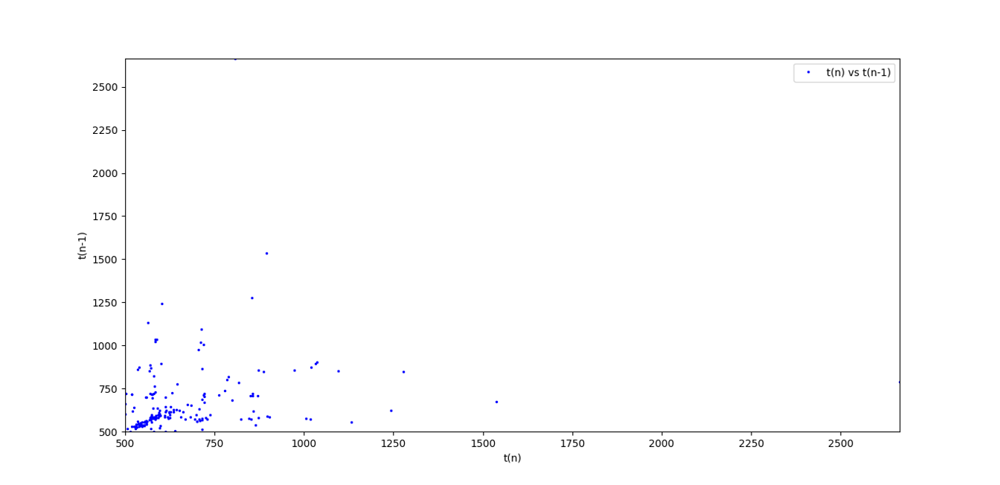
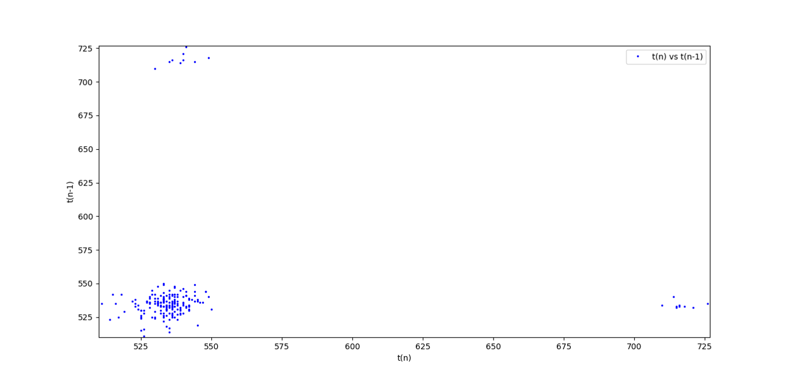
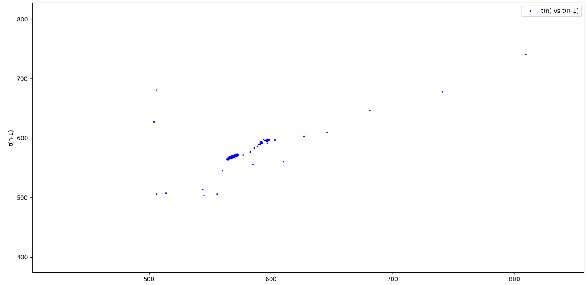
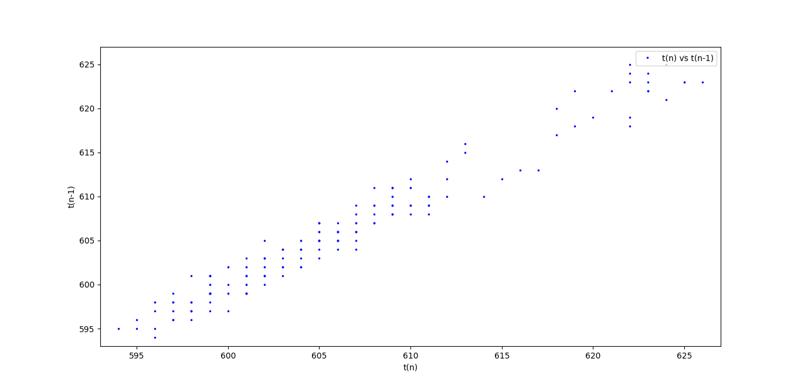
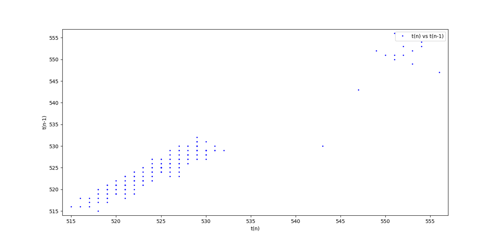
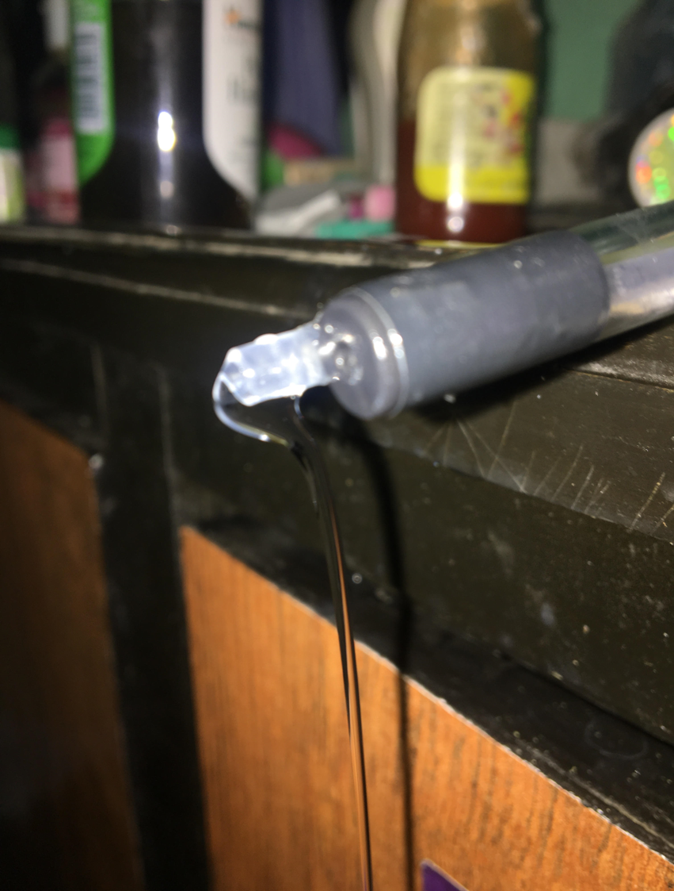
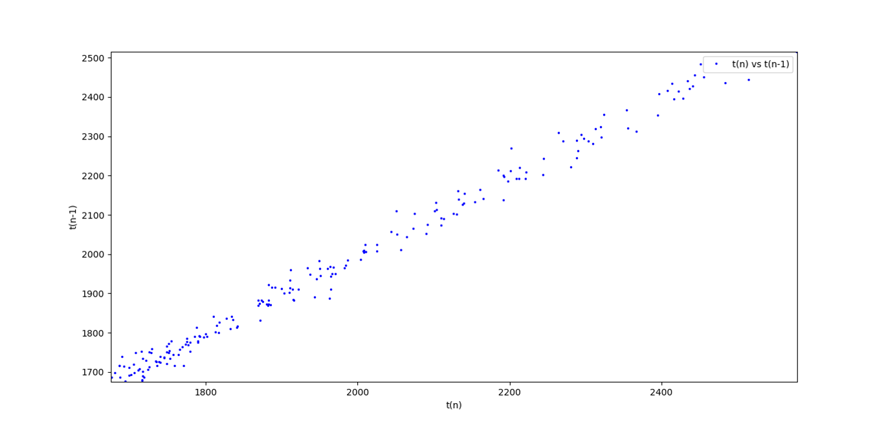
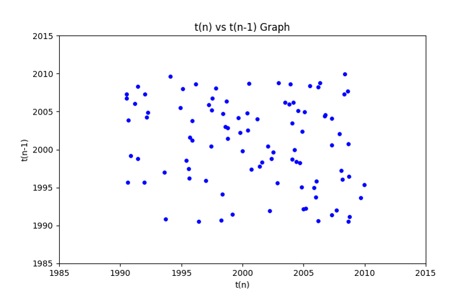
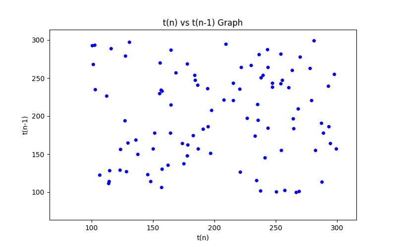

About Me
I am Rishikesh Sah, a high school student at Viswa Niketan Secondary School. This project delves into the fascinating fluid dynamics of a dripping faucet.
Introduction
The dripping faucet is a common yet complex phenomenon governed by principles of fluid dynamics. The timing between drops can be predictable or chaotic, influenced by surface tension, viscosity, gravity, and other factors. This study examines the effects of these variables on drop formation.
Experimental Setup
The setup includes a piezo-based sensor to detect drop impact, an Arduino for timestamp recording, and Python for data analysis and visualization. The equipment used includes:
- Piezoelectric Disc
- Arduino Uno R3
- Saline Drip Tube
- Water Container
- Computer for data visualization
Key Physics Principles
- Surface Tension: Water molecules attract each other due to cohesive forces, forming droplets. When the force of gravity overcomes surface tension, a drop detaches.
- Gravity: Pulls water downward, influencing drop size and frequency.
- Viscosity: Determines how easily water flows; higher viscosity delays drop formation.
- Flow Rate & Pressure: Higher pressure leads to faster drop formation.
- Chaos Theory: Small variations in conditions can cause unpredictable changes in drop timing.
Observations & Results
Effect of Salt Concentration
Adding salt increases water density, reducing surface tension and making drops detach faster. Higher salinity weakens cohesive forces, accelerating droplet formation.
 Temperature Impact
Higher temperatures reduce water’s viscosity and surface tension, allowing faster and smaller drops. Heat weakens hydrogen bonds, making drop detachment easier.
  Soap Solution
Soap molecules break surface tension by interfering with water's cohesive forces. Instead of discrete droplets, water flows in a continuous stream.
Effect of Water Level
Higher water levels exert more pressure, forcing drops to form faster. As the water level drops, pressure decreases, lengthening inter-drop time.
Chaotic vs Predictable Behavior
At low flow rates, drops form at steady intervals. Increasing flow rate causes slight variations, and at a certain point, the system becomes chaotic, with unpredictable drop intervals.
 Conclusion
This experiment demonstrates how changes in fluid properties significantly affect drop formation. Understanding these dynamics has applications in medical IV drips, fluid engineering, and chaos theory research.